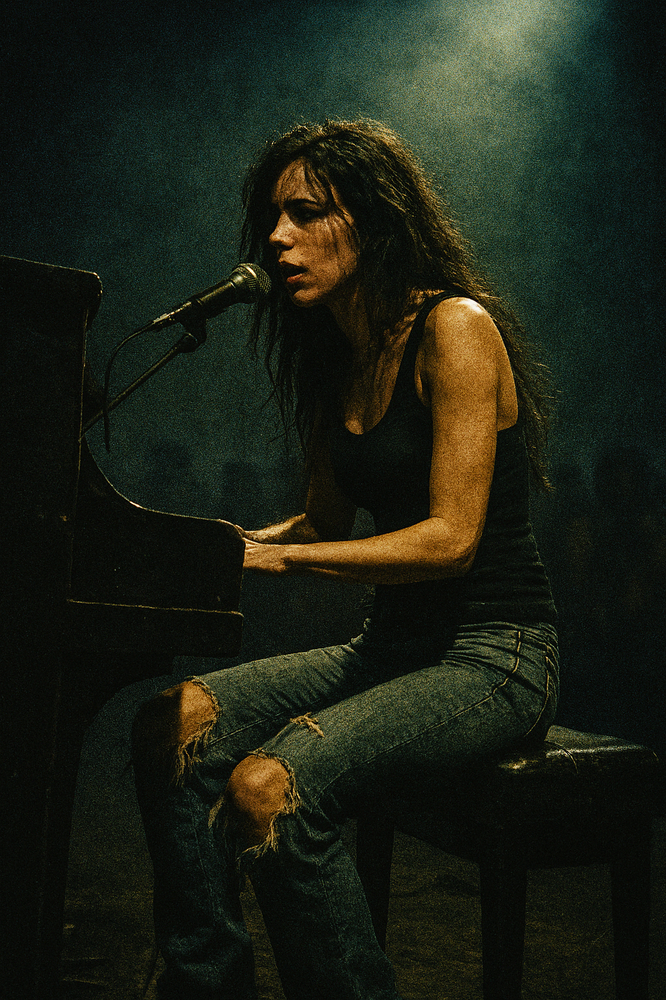
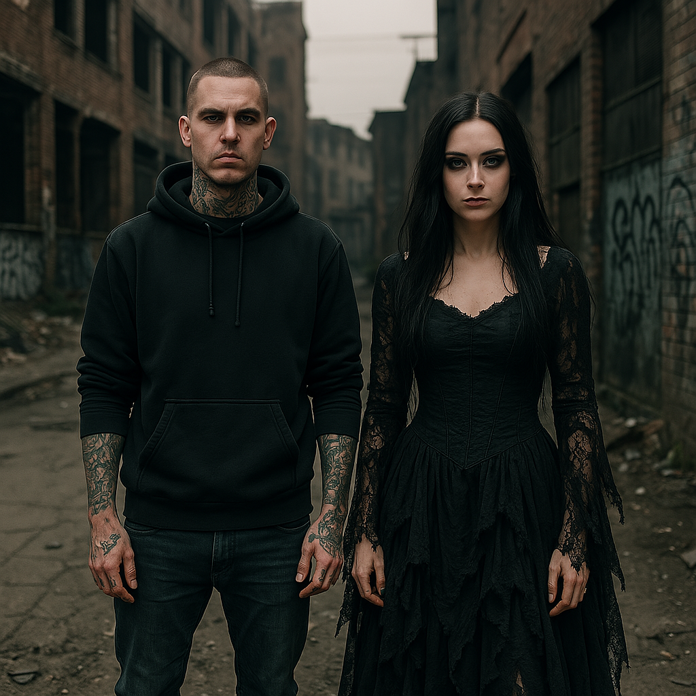

About the Band
Age of the Broken is a five-piece nu-metal/rap-rock band that channels the raw, emotional energy of early 2000s legends like Linkin Park and Evanescence. Their music hits like a fist to the chest—painful, honest, and unforgettable.
- Nyx Vale (vocals, piano) – The haunting voice at the heart of the band. With a gothic yet raw presence, her melodies cut through like light in a storm.
- Riot Cain (rap vocals) – Covered in ink and trauma, his verses are fire and fury—gritty, street-born, and relentlessly real.
- Ash “Blades” Romero (guitar) – Shreds with the soul of a fallen angel, bringing heavy riffs and cinematic textures.
- Juno Cross (bass) – The quiet backbone, pulsing like thunder beneath the chaos.
- Hex Vega (drums) – Keeps the heartbeat of the band with explosive percussion and rhythmic scars.

